Problem of the Month (April 2011)
The square of side 11 below contains squares of side 1, 2, 3, and 4. Note that 3 properties are satisfied:
1) no vertical or horizontal line passes through the interior of two squares of the same size
2) the maximum number of squares of each size are packed subject to the previous constraint
3) this is the smallest square that will hold these squares subject to the previous constraints.
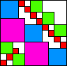
For each set of positive integers, we ask for the square containing squares of those sides satisfying those 3 properties. How do the answers change if 45o diagonal lines also should not pass through two squares of the same size?
ANSWERS
This month the solvers were Dave Langers, Bryce Herdt, and Evert Stenlund.
Here are the best known results for various sets of integers, sorted by the largest integer:
|
|
|
|
| 4
| 43
7
| 421/42/41
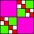
8
| 431
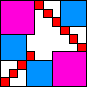
10
| 4321/432
11
|
|
| 5
| 51
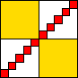
10
| 52
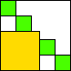
9
| 53
8
| 54
9
| 521
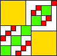
11
| 531
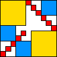
11
|
5321/532
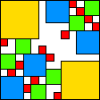
13
| 5421/542/541
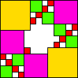
13
| 54321/5432/5431
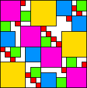
17
| 543
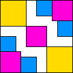
14 (DL)
|
|
| 6
| 621/62/61

12 (DL)
| 631/63
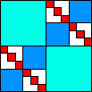
12 (DL)
| 632
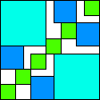
13 (DL)
| 6321
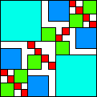
14 (DL)
| 64
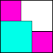
10 (DL)
| 641
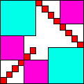
14 (DL)
|
642
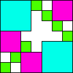
14 (DL)
| 6421
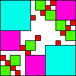
15 (DL)
| 643
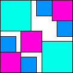
14 (DL)
| 64321/6432/6431
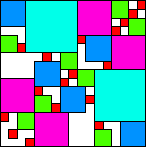
17 (DL)
| 65
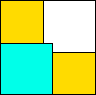
11 (DL)
| 651
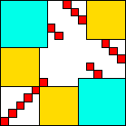
16 (DL)
|
6521/652
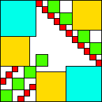
17 (DL)
| 653
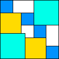
14 (DL)
| 6531
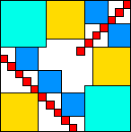
17 (DL)
| 65321/6532
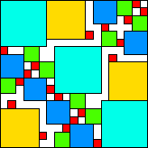
19 (DL)
| 6541/654
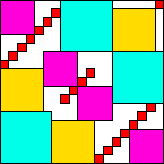
19 (BH)
|
6542
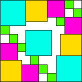
19 (DL)
| 65421
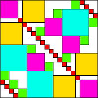
22 (DL)
| 65431/6543

22 (DL)
| 654321/65432
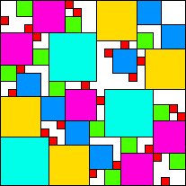
23 (DL)
|
|
| 7
| 72

13 (BH)
| 721
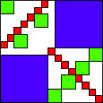
15 (BH)
| 73
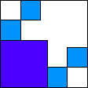
13 (BH)
| 731/71
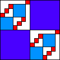
14 (BH)
| 7321/732
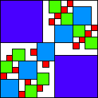
16 (BH)
|
74
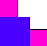
11 (BH)
| 741
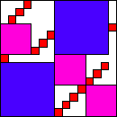
15 (DL)
| 742
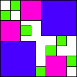
15 (DL)
| 7421

16 (DL)
| 743
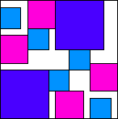
17 (DL)
|
74321/7432/7431
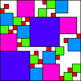
19 (DL)
| 75

12 (BH)
| 751

17 (DL)
| 75321/7532/7531
7521/753/752
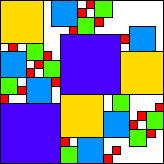
19 (DL)
| 754
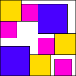
18 (DL)
|
7541
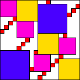
19 (DL)
| 754321/75432/75431
7543/75421/7542
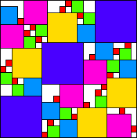
23 (DL)
| 76
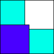
13 (BH)
| 7621/762/761
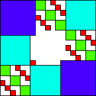
19 (BH)
|
7631/763
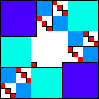
19 (BH)
| 76321/7632
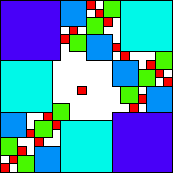
20 (BH)
| 7641/764
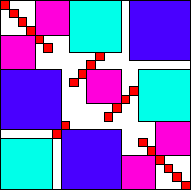
22 (BH)
| 76421/7642
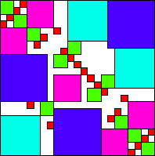
23 (BH)
|
76431/7643
26 (BH)
| 76432/764321
27 (BH)
| 765
19 (BH)
| 7651
26 (BH)
|
76521/7652
27 (BH)
| 7653/76531/76532/765321
29 (BH)
| 7654/76541/76542/765421/76543/765431/765432/7654321

34 (BH)
|
|
Evert Stenlund pointed out that the diagonal conditions:
1) no vertical or horizontal line passes through the interior of two squares of the same size
2) the maximum number of squares of each size are packed subject to the previous constraint
3) no 45o diagonal line passes through the interior of two squares of the same size
4) this is the smallest square that will hold these squares subject to the previous constraints.
were impossible to fulfill.
He suggested the conditions:
1) no vertical or horizontal line passes through the interior of two squares of the same size
2) the maximum number of squares of each size are packed subject to the previous constraint
3) no 45o diagonal line passes through the center of a square and the interior of another square of same size
4) this is the smallest integer-sided square that will hold these squares subject to the previous constraints.
Here are the best-known packings with this rule:
|
|
| 3
| 31
12 (ES)
| 321/32
14 (ES/BH)
|
|
| 4
| 4321/432/431/43/421/42/41
16 (ES/BH)
|
|
| 5
| 52
9 (BH)
| 521
20 (ES)
| 5321/532/531/53
22 (ES)
|
541/54/51
20 (ES)
| 5421/542
22 (ES)
| 54321/5432/5431/543

23 (ES)
|
|
Bryce Herdt thought the diagonal condition should be:
1) no vertical, horizontal, or 45o diagonal line passes through the interior of two squares of the same size
2) the maximum number of squares of each size are packed subject to the previous constraint
3) this is the smallest square that will hold these squares subject to the previous constraints.
He, Evert Stenlund, and Dave Langers all analyzed some small cases, though I didn't care for that version of the problem.
If you can extend any of these results, please
e-mail me.
Click here to go back to Math Magic. Last updated 4/17/11.